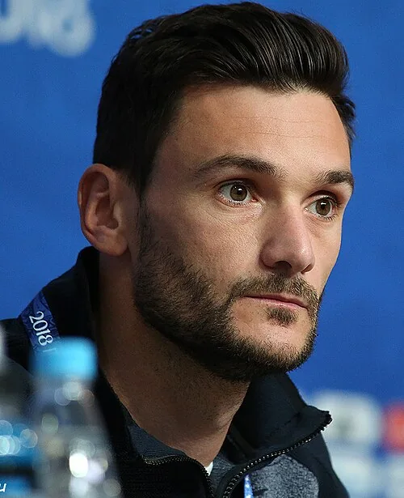

Photo source ↗Кирилл Венедиктов · CC BY-SA 3.0
The profile
Hugo Lloris
Hugo Lloris was a French goalkeeper and long-serving captain who spent much of his club career at Tottenham Hotspur. His shot-stopping anchored France’s defence.
Lloris established himself at Nice and Lyon before a long spell with Tottenham. His quick reactions, distribution and steady leadership made him France’s goalkeeper and captain for many years.
Lloris captained France to the 2018 World Cup title, lifting the trophy after the 4–2 final win over Croatia. He also led the team to the 2022 final.
2010South Africa
Group stage
Group A Uruguay0 : 0France
Uruguayhome
Starting lineup
- Fernando MUSLERA
- Diego LUGANO
- Diego GODIN
- Mauricio VICTORINO
- Maximiliano PEREIRA
- Alvaro PEREIRA
- Diego PEREZ
- Egidio AREVALO
- Ignacio González
- Luis SUAREZ
- Diego FORLAN
Substitutions
- 62′Nicolas LODEIRO on · Ignacio González off
- 73′Sebastian ABREU on · Luis SUAREZ off
- 86′Sebastian EGUREN on · Diego PEREZ off
Franceaway
Starting lineup
- Hugo Lloris
- Bacary SAGNA
- Eric ABIDAL
- William GALLAS
- Patrice EVRA
- Yoann GOURCUFF
- Jeremy TOULALAN
- Abou DIABY
- Franck RIBÉRY
- Sidney GOVOU
- Nicolas ANELKA
Substitutions
- 71′Thierry HENRY on · Nicolas ANELKA off
- 74′Florent MALOUDA on · Yoann GOURCUFF off
- 84′GIGNAC Andre Pierre on · Sidney GOVOU off
Group A France0 : 2Mexico
- Javier HERNANDEZ63′
- Cuauhtemoc BLANCO78′ · pen.
Francehome
Starting lineup
- Hugo Lloris
- Bacary SAGNA
- Eric ABIDAL
- William GALLAS
- Patrice EVRA
- Jeremy TOULALAN
- Florent MALOUDA
- Abou DIABY
- Franck RIBÉRY
- Sidney GOVOU
- Nicolas ANELKA
Substitutions
- 45′GIGNAC Andre Pierre on · Nicolas ANELKA off
- 68′Mathieu Valbuena on · Sidney GOVOU off
Mexicoaway
Starting lineup
- Oscar PEREZ
- Francisco RODRIGUEZ
- Carlos SALCIDO
- Rafael MARQUEZ
- Ricardo OSORIO
- Hector MORENO
- Efrain JUAREZ
- Gerardo TORRADO
- Guillermo FRANCO
- Carlos VELA
- Giovani DOS SANTOS
Substitutions
- 31′Pablo BARRERA on · Carlos VELA off
- 54′Javier HERNANDEZ on · Efrain JUAREZ off
- 61′Cuauhtemoc BLANCO on · Guillermo FRANCO off
Group A France1 : 2South Africa
- Florent MALOUDA69′
- Bongani KHUMALO19′
- Katlego MPHELA36′
Francehome
Starting lineup
- Hugo Lloris
- Bacary SAGNA
- William GALLAS
- Sebastien SQUILLACI
- Gaël CLICHY
- Yoann GOURCUFF
- Alou DIARRA
- Abou DIABY
- Franck RIBÉRY
- Djibril CISSE
- GIGNAC Andre Pierre
Substitutions
- 45′Florent MALOUDA on · GIGNAC Andre Pierre off
- 54′Thierry HENRY on · Djibril CISSE off
- 81′Sidney GOVOU on · Alou DIARRA off
South Africaaway
Starting lineup
- Moneeb JOSEPHS
- Tsepo MASILELA
- Aaron MOKOENA
- Anele NGCONGCA
- Bongani KHUMALO
- MacBeth SIBAYA
- Siphiwe TSHABALALA
- Steven PIENAAR
- Thanduyise KHUBONI
- Katlego MPHELA
- Bernard PARKER
Substitutions
- 54′Siboniso GAXA on · Anele NGCONGCA off
- 67′Siyabonga NOMVETHE on · Bernard PARKER off
- 77′Teko MODISE on · Thanduyise KHUBONI off
2014Brazil
Quarter-finals
Group E France3 : 0Honduras
- Karim Benzema44′ · pen.
- Noel VALLADARES47′ · own goal
- Karim Benzema71′
Francehome
Starting lineup
- Hugo Lloris
- Mathieu DEBUCHY
- Patrice EVRA
- Raphael VARANE
- Mamadou SAKHO
- Yohan CABAYE
- Mathieu Valbuena
- Blaise Matuidi
- Paul Pogba
- Karim Benzema
- Antoine Griezmann
Substitutions
- 56′Moussa Sissoko on · Paul Pogba off
- 64′Rio MAVUBA on · Yohan CABAYE off
- 77′Olivier Giroud on · Mathieu Valbuena off
Hondurasaway
Starting lineup
- Noel VALLADARES
- Maynor FIGUEROA
- Victor BERNARDEZ
- Brayan BECKELES
- Emilio IZAGUIRRE
- Wilson PALACIOS
- Roger ESPINOZA
- Andy NAJAR
- Luis GARRIDO
- Jerry BENGTSON
- Carlo COSTLY
Substitutions
- 45′Boniek GARCIA on · Jerry BENGTSON off
- 45′Osman CHAVEZ on · Victor BERNARDEZ off
- 57′Jorge CLAROS on · Andy NAJAR off
Group E Switzerland2 : 5France
- Blerim DZEMAILI80′
- Granit Xhaka86′
- Olivier Giroud16′
- Blaise Matuidi17′
- Mathieu Valbuena39′
- Karim Benzema66′
- Moussa Sissoko72′
Switzerlandhome
Starting lineup
- Diego BENAGLIO
- Stephan LICHTSTEINER
- Steve VON BERGEN
- Ricardo RODRIGUEZ
- Johan DJOUROU
- Gokhan INLER
- Granit Xhaka
- Valon BEHRAMI
- Xherdan Shaqiri
- Haris SEFEROVIC
- Admir MEHMEDI
Substitutions
- 8′Philippe SENDEROS on · Steve VON BERGEN off
- 45′Blerim DZEMAILI on · Valon BEHRAMI off
- 68′Josip Drmic on · Haris SEFEROVIC off
Franceaway
Starting lineup
- Hugo Lloris
- Mathieu DEBUCHY
- Patrice EVRA
- Raphael VARANE
- Mamadou SAKHO
- Yohan CABAYE
- Mathieu Valbuena
- Blaise Matuidi
- Moussa Sissoko
- Olivier Giroud
- Karim Benzema
Substitutions
- 62′Paul Pogba on · Olivier Giroud off
- 65′Laurent KOSCIELNY on · Mamadou SAKHO off
- 81′Antoine Griezmann on · Mathieu Valbuena off
Group E Ecuador0 : 0France
Ecuadorhome
Starting lineup
- Alexander DOMINGUEZ
- Jorge GUAGUA
- Frickson ERAZO
- Juan PAREDES
- Cristhian NOBOA
- Jefferson MONTERO
- Walter AYOVI
- Oswaldo MINDA
- Michael ARROYO
- Antonio VALENCIA
- Enner VALENCIA
Substitutions
- 62′Alex IBARRA on · Jefferson MONTERO off
- 81′Gabriel ACHILIER on · Michael ARROYO off
- 88′Felipe CAICEDO on · Cristhian NOBOA off
Franceaway
Starting lineup
- Hugo Lloris
- Mamadou SAKHO
- Bacary SAGNA
- Lucas Digne
- Laurent KOSCIELNY
- Blaise Matuidi
- Moussa Sissoko
- Paul Pogba
- Morgan Schneiderlin
- Karim Benzema
- Antoine Griezmann
Substitutions
- 60′Raphael VARANE on · Mamadou SAKHO off
- 66′Olivier Giroud on · Blaise Matuidi off
- 78′Loïc RÉMY on · Antoine Griezmann off
Round of 16 France2 : 0Nigeria
- Paul Pogba78′
- Joseph YOBO90+1′ · own goal
Francehome
Starting lineup
- Hugo Lloris
- Mathieu DEBUCHY
- Patrice EVRA
- Raphael VARANE
- Laurent KOSCIELNY
- Yohan CABAYE
- Mathieu Valbuena
- Blaise Matuidi
- Paul Pogba
- Olivier Giroud
- Karim Benzema
Substitutions
- 61′Antoine Griezmann on · Olivier Giroud off
- 90+3′Moussa Sissoko on · Mathieu Valbuena off
Nigeriaaway
Starting lineup
- Vincent ENYEAMA
- Joseph YOBO
- Efe AMBROSE
- Juwon OSHANIWA
- Kenneth OMERUO
- John Obi MIKEL
- Ogenyi ONAZI
- Ahmed Musa
- Peter ODEMWINGIE
- Emmanuel EMENIKE
- Victor Moses
Substitutions
- 58′Ruben GABRIEL on · Ogenyi ONAZI off
- 88′Uche NWOFOR on · Victor Moses off
Quarterfinal France0 : 1Germany
- Mats Hummels12′
Francehome
Starting lineup
- Hugo Lloris
- Mathieu DEBUCHY
- Patrice EVRA
- Raphael VARANE
- Mamadou SAKHO
- Yohan CABAYE
- Mathieu Valbuena
- Blaise Matuidi
- Paul Pogba
- Karim Benzema
- Antoine Griezmann
Substitutions
- 71′Laurent KOSCIELNY on · Mamadou SAKHO off
- 72′Loïc RÉMY on · Yohan CABAYE off
- 84′Olivier Giroud on · Mathieu Valbuena off
Germanyaway
Starting lineup
- NEUER Manuel
- Benedikt HOEWEDES
- Mats Hummels
- BOATENG Jerome
- Sami KHEDIRA
- Bastian SCHWEINSTEIGER
- Mesut OEZIL
- Philipp LAHM
- Toni Kroos
- Miroslav KLOSE
- MUELLER Thomas
Substitutions
- 68′Andre SCHUERRLE on · Miroslav KLOSE off
- 82′Mario GOETZE on · Mesut OEZIL off
- 90+1′Christoph Kramer on · Toni Kroos off
2018Russia
Champion
Group C France2 : 1Australia
- Antoine GRIEZMANN58′ · pen.
- Paul POGBA82′
- Mile JEDINAK62′ · pen.
Francehome
Starting lineup
- Hugo LLORIS
- Benjamin PAVARD
- Raphael VARANE
- Samuel UMTITI
- Lucas HERNANDEZ
- Paul POGBA
- Corentin TOLISSO
- Ngolo KANTE
- Antoine GRIEZMANN
- Kylian MBAPPE
- Ousmane DEMBELE
Substitutions
- 70′Olivier GIROUD on · Antoine GRIEZMANN off
- 70′Nabil FEKIR on · Ousmane DEMBELE off
- 78′Blaise MATUIDI on · Corentin TOLISSO off
Australiaaway
Starting lineup
- Mathew RYAN
- Mark MILLIGAN
- Aziz BEHICH
- Joshua RISDON
- Trent SAINSBURY
- Mathew LECKIE
- Robbie KRUSE
- Aaron MOOY
- Mile JEDINAK
- Tom ROGIC
- Andrew NABBOUT
Substitutions
- 64′Tomi JURIC on · Andrew NABBOUT off
- 72′Jackson IRVINE on · Tom ROGIC off
- 84′Daniel ARZANI on · Robbie KRUSE off
Group C France1 : 0Peru
- Kylian MBAPPE34′
Francehome
Starting lineup
- Hugo LLORIS
- Benjamin PAVARD
- Raphael VARANE
- Samuel UMTITI
- Lucas HERNANDEZ
- Paul POGBA
- Antoine GRIEZMANN
- Kylian MBAPPE
- Ngolo KANTE
- Blaise MATUIDI
- Olivier GIROUD
Substitutions
- 75′Ousmane DEMBELE on · Kylian MBAPPE off
- 80′Nabil FEKIR on · Antoine GRIEZMANN off
- 89′Steven NZONZI on · Paul POGBA off
Peruaway
Starting lineup
- Pedro GALLESE
- Alberto RODRIGUEZ
- Miguel TRAUCO
- Christian RAMOS
- Luis ADVINCULA
- Christian CUEVA
- Andre CARRILLO
- Yoshimar YOTUN
- Edison FLORES
- Pedro AQUINO
- Paolo GUERRERO
Substitutions
- 46′Jefferson FARFAN on · Yoshimar YOTUN off
- 46′Anderson SANTAMARIA on · Alberto RODRIGUEZ off
- 82′Raul RUIDIAZ on · Christian CUEVA off
Round of 16 France4 : 3Argentina
- Antoine GRIEZMANN13′ · pen.
- Benjamin PAVARD57′
- Kylian MBAPPE64′
- Kylian MBAPPE68′
- Angel DI MARIA41′
- Gabriel MERCADO48′
- Sergio AGUERO90+3′
Francehome
Starting lineup
- Hugo LLORIS
- Benjamin PAVARD
- Raphael VARANE
- Samuel UMTITI
- Lucas HERNANDEZ
- Paul POGBA
- Antoine GRIEZMANN
- Kylian MBAPPE
- Ngolo KANTE
- Blaise MATUIDI
- Olivier GIROUD
Substitutions
- 75′Corentin TOLISSO on · Blaise MATUIDI off
- 83′Nabil FEKIR on · Antoine GRIEZMANN off
- 89′Florian THAUVIN on · Kylian MBAPPE off
Argentinaaway
Starting lineup
- Franco ARMANI
- Gabriel MERCADO
- Nicolas TAGLIAFICO
- Marcos ROJO
- Nicolas OTAMENDI
- Ever BANEGA
- Javier MASCHERANO
- Enzo PEREZ
- Lionel MESSI
- Angel DI MARIA
- Cristian PAVON
Substitutions
- 46′Federico FAZIO on · Marcos ROJO off
- 66′Sergio AGUERO on · Enzo PEREZ off
- 75′Maximiliano MEZA on · Cristian PAVON off
Quarterfinal Uruguay0 : 2France
- Raphael VARANE40′
- Antoine GRIEZMANN61′
Uruguayhome
Starting lineup
- Fernando MUSLERA
- Jose GIMENEZ
- Diego GODIN
- Diego LAXALT
- Martin CACERES
- Rodrigo BENTANCUR
- Nahitan NANDEZ
- Lucas TORREIRA
- Matias VECINO
- Luis SUAREZ
- Cristhian STUANI
Substitutions
- 59′Maximiliano GOMEZ on · Cristhian STUANI off
- 59′Cristian RODRIGUEZ on · Rodrigo BENTANCUR off
- 73′Jonathan URRETAVISCAYA on · Nahitan NANDEZ off
Franceaway
Starting lineup
- Hugo LLORIS
- Benjamin PAVARD
- Raphael VARANE
- Samuel UMTITI
- Lucas HERNANDEZ
- Paul POGBA
- Antoine GRIEZMANN
- Kylian MBAPPE
- Corentin TOLISSO
- Ngolo KANTE
- Olivier GIROUD
Substitutions
- 80′Steven NZONZI on · Corentin TOLISSO off
- 88′Ousmane DEMBELE on · Kylian MBAPPE off
- 90+3′Nabil FEKIR on · Antoine GRIEZMANN off
Semifinal France1 : 0Belgium
- Samuel UMTITI51′
Francehome
Starting lineup
- Hugo LLORIS
- Benjamin PAVARD
- Raphael VARANE
- Samuel UMTITI
- Lucas HERNANDEZ
- Paul POGBA
- Antoine GRIEZMANN
- Kylian MBAPPE
- Ngolo KANTE
- Blaise MATUIDI
- Olivier GIROUD
Substitutions
- 85′Steven NZONZI on · Olivier GIROUD off
- 86′Corentin TOLISSO on · Blaise MATUIDI off
Belgiumaway
Starting lineup
- Thibaut COURTOIS
- Toby ALDERWEIRELD
- Vincent KOMPANY
- Jan VERTONGHEN
- Nacer CHADLI
- Axel WITSEL
- Marouane FELLAINI
- Moussa DEMBELE
- Kevin DE BRUYNE
- Romelu LUKAKU
- Eden HAZARD
Substitutions
- 60′Dries MERTENS on · Moussa DEMBELE off
- 80′Yannick CARRASCO on · Marouane FELLAINI off
- 90+1′Michy BATSHUAYI on · Nacer CHADLI off
Final France4 : 2Croatia
- Mario MANDZUKIC18′ · own goal
- Antoine GRIEZMANN38′ · pen.
- Paul POGBA59′
- Kylian MBAPPE65′
- Ivan PERISIC28′
- Mario MANDZUKIC69′
Francehome
Starting lineup
- Hugo LLORIS
- Benjamin PAVARD
- Raphael VARANE
- Samuel UMTITI
- Lucas HERNANDEZ
- Paul POGBA
- Antoine GRIEZMANN
- Kylian MBAPPE
- Ngolo KANTE
- Blaise MATUIDI
- Olivier GIROUD
Substitutions
- 55′Steven NZONZI on · Ngolo KANTE off
- 73′Corentin TOLISSO on · Blaise MATUIDI off
- 81′Nabil FEKIR on · Olivier GIROUD off
Croatiaaway
Starting lineup
- Danijel SUBASIC
- Sime VRSALJKO
- Ivan STRINIC
- Dejan LOVREN
- Domagoj VIDA
- Ivan PERISIC
- Ivan RAKITIC
- Luka MODRIC
- Marcelo BROZOVIC
- Ante REBIC
- Mario MANDZUKIC
Substitutions
- 71′Andrej KRAMARIC on · Ante REBIC off
- 82′Marko PJACA on · Ivan STRINIC off
2022Qatar
Runner-up
Group D France4 : 1Australia
- Adrien RABIOT27′
- Olivier GIROUD32′
- Kylian MBAPPE68′
- Olivier GIROUD71′
- Craig GOODWIN9′
Francehome
Starting lineup
- Hugo LLORIS
- Benjamin PAVARD
- Dayot UPAMECANO
- Lucas HERNANDEZ
- Ibrahima KONATE
- Antoine GRIEZMANN
- Aurelien TCHOUAMENI
- Adrien RABIOT
- Olivier GIROUD
- Kylian MBAPPE
- Ousmane DEMBELE
Substitutions
- 13′Theo HERNANDEZ on · Lucas HERNANDEZ off
- 77′Youssouf Fofana on · Aurelien TCHOUAMENI off
- 77′Kingsley COMAN on · Ousmane DEMBELE off
- 89′Marcus THURAM on · Olivier GIROUD off
- 89′Jules KOUNDE on · Benjamin PAVARD off
Australiaaway
Starting lineup
- Mathew RYAN
- Nathaniel ATKINSON
- Kye ROWLES
- Aziz BEHICH
- Harry SOUTTAR
- Aaron MOOY
- Riley McGREE
- Jackson IRVINE
- Mathew LECKIE
- Mitch DUKE
- Craig GOODWIN
Substitutions
- 56′Jason CUMMINGS on · Mitch DUKE off
- 73′Awer MABIL on · Riley McGREE off
- 73′Garang KUOL on · Craig GOODWIN off
- 85′Keanu BACCUS on · Jackson IRVINE off
- 85′Milos DEGENEK on · Nathaniel ATKINSON off
Group D France2 : 1Denmark
- Kylian MBAPPE61′
- Kylian MBAPPE86′
- Andreas CHRISTENSEN68′
Francehome
Starting lineup
- Hugo LLORIS
- Raphael VARANE
- Jules KOUNDE
- Dayot UPAMECANO
- Theo HERNANDEZ
- Antoine GRIEZMANN
- Aurelien TCHOUAMENI
- Kylian MBAPPE
- Ousmane DEMBELE
- Adrien RABIOT
- Olivier GIROUD
Substitutions
- 63′Marcus THURAM on · Olivier GIROUD off
- 75′Kingsley COMAN on · Ousmane DEMBELE off
- 75′Ibrahima KONATE on · Raphael VARANE off
- 90+2′Youssouf Fofana on · Antoine GRIEZMANN off
Denmarkaway
Starting lineup
- Kasper SCHMEICHEL
- Joachim ANDERSEN
- Victor NELSSON
- Andreas CHRISTENSEN
- Joakim MAEHLE
- Christian ERIKSEN
- Rasmus KRISTENSEN
- Pierre-Emile HOJBJERG
- Mikkel DAMSGAARD
- Andreas CORNELIUS
- Jesper LINDSTROM
Substitutions
- 46′Martin BRAITHWAITE on · Andreas CORNELIUS off
- 73′Kasper DOLBERG on · Mikkel DAMSGAARD off
- 85′Christian NORGAARD on · Jesper LINDSTROM off
- 90+2′Alexander BAH on · Rasmus KRISTENSEN off
Round of 16 France3 : 1Poland
- Olivier GIROUD44′
- Kylian MBAPPE74′
- Kylian MBAPPE90+1′
- Robert LEWANDOWSKI90+9′ · pen.
Francehome
Starting lineup
- Hugo LLORIS
- Raphael VARANE
- Jules KOUNDE
- Dayot UPAMECANO
- Theo HERNANDEZ
- Antoine GRIEZMANN
- Aurelien TCHOUAMENI
- Kylian MBAPPE
- Ousmane DEMBELE
- Adrien RABIOT
- Olivier GIROUD
Substitutions
- 66′Youssouf Fofana on · Aurelien TCHOUAMENI off
- 76′Kingsley COMAN on · Ousmane DEMBELE off
- 76′Marcus THURAM on · Olivier GIROUD off
- 90+2′Axel DISASI on · Jules KOUNDE off
Polandaway
Starting lineup
- Wojciech SZCZESNY
- Matty CASH
- Jakub KIWIOR
- Kamil GLIK
- Bartosz BERESZYNSKI
- Grzegorz KRYCHOWIAK
- Jakub KAMINSKI
- Sebastian SZYMANSKI
- Piotr ZIELINSKI
- Przemyslaw FRANKOWSKI
- Robert LEWANDOWSKI
Substitutions
- 64′Arkadiusz MILIK on · Sebastian SZYMANSKI off
- 71′Nicola ZALEWSKI on · Jakub KAMINSKI off
- 71′Krystian BIELIK on · Grzegorz KRYCHOWIAK off
- 87′Kamil GROSICKI on · Przemyslaw FRANKOWSKI off
- 87′Jan BEDNAREK on · Jakub KIWIOR off
Quarterfinal England1 : 2France
- Harry KANE54′ · pen.
- Aurelien TCHOUAMENI17′
- Olivier GIROUD78′
Englandhome
Starting lineup
- Jordan PICKFORD
- Kyle WALKER
- Luke SHAW
- John STONES
- Harry MAGUIRE
- Declan RICE
- Jordan HENDERSON
- Jude BELLINGHAM
- Harry KANE
- Bukayo SAKA
- Phil FODEN
Substitutions
- 79′Mason MOUNT on · Jordan HENDERSON off
- 79′Raheem STERLING on · Bukayo SAKA off
- 85′Marcus RASHFORD on · Phil FODEN off
- 90+8′Jack GREALISH on · John STONES off
Franceaway
Starting lineup
- Hugo LLORIS
- Raphael VARANE
- Jules KOUNDE
- Dayot UPAMECANO
- Theo HERNANDEZ
- Antoine GRIEZMANN
- Aurelien TCHOUAMENI
- Kylian MBAPPE
- Ousmane DEMBELE
- Adrien RABIOT
- Olivier GIROUD
Substitutions
- 79′Kingsley COMAN on · Ousmane DEMBELE off
Semifinal France2 : 0Morocco
- Theo HERNANDEZ5′
- Randal KOLO MUANI79′
Francehome
Starting lineup
- Hugo LLORIS
- Raphael VARANE
- Jules KOUNDE
- Theo HERNANDEZ
- Ibrahima KONATE
- Antoine GRIEZMANN
- Aurelien TCHOUAMENI
- Youssouf Fofana
- Olivier GIROUD
- Kylian MBAPPE
- Ousmane DEMBELE
Substitutions
- 65′Marcus THURAM on · Olivier GIROUD off
- 78′Randal KOLO MUANI on · Ousmane DEMBELE off
Moroccoaway
Starting lineup
- Yassine BOUNOU
- Romain SAISS
- Jawad EL YAMIQ
- Achraf DARI
- Achraf HAKIMI
- Noussair MAZRAOUI
- Sofyan AMRABAT
- Azzedine OUNAHI
- Hakim ZIYECH
- Sofiane BOUFAL
- Youssef EN NESYRI
Substitutions
- 21′Selim AMALLAH on · Romain SAISS off
- 46′Yahya ATTIAT-ALLAH on · Noussair MAZRAOUI off
- 66′Zakaria ABOUKHLAL on · Sofiane BOUFAL off
- 66′Abderrazak HAMDALLAH on · Youssef EN NESYRI off
- 78′Abde EZZALZOULI on · Selim AMALLAH off
Final Argentina3 : 3France
- Lionel MESSI23′ · pen.
- Angel DI MARIA36′
- Lionel MESSI108′
- Kylian MBAPPE80′ · pen.
- Kylian MBAPPE81′
- Kylian MBAPPE118′ · pen.
Argentinahome
Starting lineup
- Emiliano MARTINEZ
- Nicolas TAGLIAFICO
- Cristian ROMERO
- Nicolas OTAMENDI
- Nahuel MOLINA
- Rodrigo DE PAUL
- Alexis MAC ALLISTER
- Enzo FERNANDEZ
- Julian ALVAREZ
- Lionel MESSI
- Angel DI MARIA
Substitutions
- 64′Marcos ACUNA on · Angel DI MARIA off
- 91′Gonzalo MONTIEL on · Nahuel MOLINA off
- 102′Lautaro MARTINEZ on · Julian ALVAREZ off
- 102′Leandro PAREDES on · Rodrigo DE PAUL off
- 116′German PEZZELLA on · Alexis MAC ALLISTER off
- 120+1′Paulo DYBALA on · Nicolas TAGLIAFICO off
Franceaway
Starting lineup
- Hugo LLORIS
- Raphael VARANE
- Jules KOUNDE
- Dayot UPAMECANO
- Theo HERNANDEZ
- Antoine GRIEZMANN
- Aurelien TCHOUAMENI
- Adrien RABIOT
- Olivier GIROUD
- Kylian MBAPPE
- Ousmane DEMBELE
Substitutions
- 41′Randal KOLO MUANI on · Ousmane DEMBELE off
- 41′Marcus THURAM on · Olivier GIROUD off
- 71′Kingsley COMAN on · Antoine GRIEZMANN off
- 71′Eduardo CAMAVINGA on · Theo HERNANDEZ off
- 96′Youssouf Fofana on · Adrien RABIOT off
- 113′Ibrahima KONATE on · Raphael VARANE off
- 120+1′Axel DISASI on · Jules KOUNDE off